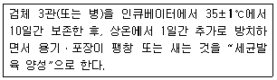
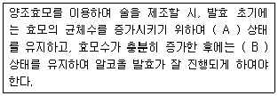

식품산업기사(구) (2009-05-10 기출문제)
1과목: 식품위생학
1. Cholinesterase의 작용을 억제하여 혈액과 조직 중에 생기는 유해한 Acetylcholine을 축적시켜 중독증상을 나타내는 농약은?
- 유기인제
- 유기염소제
- 유기불소제
- 유기수은제
(정답률: 84%)

2. Q열(Fever)이 발생한 지역에서 생산되는 우유를 살균처리 할 때는 어느 병원균이 파괴될 때까지 가열해야 하는가?
- Tuberculosis Bacillus
- Streptococcus Lactis
- Coxiella Burnetii
- Salmonella Pullorum
(정답률: 78%)
3. 황색포도상구균의 특징이 아닌 것은?
- 60℃에서 30분 가열하면 균은 거의 사멸된다.
- 건조 상태에서 저항성이 강하다.
- 소금농도가 높은 곳에서는 증식하지 못한다.
- 식중독의 원인물질은 내열성이 강한 장독소이다.
(정답률: 70%)
4. 곰팡이의 대사산물로서 사람에게 질병이나 생리 작용의 이상을 유발하는 물질이 아닌 것은?
- Aflatoxin
- Citrinin
- Patulin
- Saxitoxin
(정답률: 77%)
5. 벤조피렌(Benzopyrene)에 관한 설명으로 틀린 것은?
- 가열처리한 식품에서 검출된다.
- 자연독이다.
- 발암물질이다.
- 대기오염물질에 해당한다.
(정답률: 91%)
6. 포도, 양조, 전분 제조시 살균 효과와 건조과일 등의 갈변방지 효과를 갖지만 천식환자에게 그 독성이 문제될 수 있는 것은?
- 시클로덱스트린
- 벤조피렌
- 아질산염
- 아황산염
(정답률: 83%)
7. 아미그달린(Amygdalin) 독소를 함유하는 것은?
- 감자
- 청매(덜 익은 매실)
- 독버섯
- 독미나리
(정답률: 95%)
8. 멜라민(Melamine) 수지로 만든 식기에서 위생상 문제가 될 수 있는 성분은?
- 페놀
- 게르마늄
- 포름알데히드
- 단량체
(정답률: 96%)
9. 방사능 핵종 중 Sr-90이 식품위생상 문제가 되는 가장 주된 이유는?
- 물리적 반감기가 짧기 때문이다.
- 생물학적 반감기가 짧기 때문이다.
- 실효(유효) 반감기가 길기 때문이다.
- 물리적 반감기가 길기 때문이다.
(정답률: 96%)
10. 대장균군의 정량시험법에 해당하는 것은?
- 추정시험
- 확정시험
- 완전시험
- 최확수법
(정답률: 91%)
11. 식품첨가물로 고시하기 위한 검토사항이 아닌 것은?
- 생리활성 기능이 확실한 것
- 화학명과 제조방법이 확실한 것
- 식품에 사용할 때 충분히 효과가 있는 것
- 통례의 사용방법에 의할 때 인체에 대한 안전성이 확보되는 것
(정답률: 92%)
12. Listeria Monocytogenes 에 관한 설명으로 틀린 것은?
- 건조하거나 염도가 높은 상태에서도 생존한다.
- 그람 음성균이다.
- 인간과 동물에게 Listeriosis라는 질병을 일으킨다.
- 냉장온도에서도 증식한다.
(정답률: 90%)
13. 쇠고기 육회를 먹을 때 감염될 수 있는 기생충은?
- 유구조충
- 십이지장충
- 요충
- 무구조충
(정답률: 96%)
14. 다음 중 서로 관계가 있는 것끼리 연결된 것은?
- 독미나리 - 에르고톡신(Ergotoxin)
- 섭조개 - 베네루핀(Venerupin)
- 독버섯 - 엔테로톡신(Enterotoxin)
- 복어 - 테트로도톡신(Tetrodotoxin)
(정답률: 88%)
15. 식품에 사용하는 안식향산(Benzoic acid)의 주요 용도는?
- 산미를 내기 위하여
- 저장수명을 연장시키기 위하여
- 영양가치를 높이기 위하여
- 산화를 방지하기 위하여
(정답률: 72%)
16. 다음 중 유해 착색료가 아닌 것은?
- Auramine
- Rhodamin B
- Alum
- Silk scarlet
(정답률: 78%)
17. 광우병(BSE)에 대한 설명으로 틀린 것은?
- 발병 원인체는 변형 프리온단백질이다.
- 광우병 검사는 소를 죽인 후 소의 뇌 조직을 이용하여 검사한다.
- 특정위험물질(specific risk materials)은 척수, 회장말단, 안구, 뇌 등이다.
- 국제수역사무국(OIE)에서는 소해면상뇌증을 A등급 질병으로 분류하고, 국내에서는 제1종 가축전염병으로 지정되어 있다.
(정답률: 84%)
18. 통ㆍ병조림식품, 레토르트식품과 관련된 다음 설명과 같은 시험은?

- 응집시험
- 가온보존시험
- 분리시험
- 독성시험
(정답률: 84%)
19. 참치통조림의 검사방법으로 부적절한 것은?
- Phosphatase 법
- 내압시험
- 외관검사
- 타검법(타관법)
(정답률: 87%)
20. 합성수지 제품 중 포르말린(Formalin)이 용출되어 식품 위생상 문제가 될 수 있는 것은?
- Phenol 수지
- 염화비닐수지
- Polyethylene
- Polypropylene
(정답률: 84%)
2과목: 식품화학
21. 지방 100g 중에 Oleic acid 20mg이 함유되어 있을 경우의 산가는? (단, KOH의 분자량은 56이고, Oleic acid C18H34O2의 분자량은 282이다.)
- 3.97
- 0.0397
- 100.7
- 1.007
(정답률: 75%)
22. 유화제가 가진 기능기 중 소수성기는?
- -OH
- -COOH
- -NH2
- -CH2-CH2-CH3
(정답률: 77%)
23. 단백질을 분해하는 식물성 효소는?
- Pepsin
- Rennin
- Papain
- Trypsin
(정답률: 60%)
24. 다음 중 함황 아미노산에 속하는 것은?
- methionine
- histidine
- glycine
- threonine
(정답률: 60%)
25. 호화전분의 노화를 억제하는 방법이 아닌 것은?
- 수분을 15% 이하로 줄인다.
- 유화제를 첨가한다.
- 설탕을 첨가한다.
- 냉장고에 보관한다.
(정답률: 78%)
26. 당류 중 케톤기를 갖는 6탄당(Keto hexose)은?
- Galactose
- Glucose
- Mannose
- Fructose
(정답률: 73%)
27. 육류의 저장 중 시간이 지남에 따라 갈색을 띠는 물질은?
- Oxymyoglobin
- Metmyoglobin
- Nitrosomyoglobin
- Sulfmyoglobin
(정답률: 80%)
28. 감귤류에 특히 많은 유기산은?
- Tartaric acid
- Citric acid
- Succinic acid
- Acetic acid
(정답률: 80%)
29. 단백질의 기능과 관계가 없는 것은?
- 조직의 성장과 유지
- 호르몬과 효소의 형성
- 체액의 균형유지
- 지용성 비타민의 흡수촉진
(정답률: 75%)
30. 육류의 냄새에 관한 설명으로 틀린 것은?
- 신선육 냄새의 주성분은 피페리딘(Piperidine)이다.
- 가열육의 냄새는 주로 마이야르 반응(Maillard reaction)에 기인한다.
- 냄새는 동물이 섭취한 사료에 따라 달라질 수 있다.
- 가열할 때 동물에 따라 특이한 냄새가 나는 것은 구성 지방이 서로 다르기 때문이다.
(정답률: 75%)
31. 콜라이드의 성질에 관한 설명 중 틀린 것은?
- 겔(Gel) 상태에서 브라운 운동을 한다.
- 반투막을 통과할 수 없다.
- 흡착성이 있어 냄새성분을 쉽게 제거한다.
- 빛을 산란시킨다.
(정답률: 70%)
32. 수분활성도와 식품의 이화학적 변화에 대한 설명으로 틀린 것은?
- 일반적으로 효모는 곰팡이보다 높은 수분활성도에서 성장을 잘한다.
- 일정수준 이상의 수분활성도에서는 수분활성도가 증가 할수록 효소활성도 증가한다.
- 단분자막 이하의 수분활성도에서는 유지의 산패가 현저히 감소한다.
- 비효소적 갈변화 반응은 수분활성도에 따라 반응속도가 변한다.
(정답률: 43%)
33. 가공식품에 사용되는 단당류나 소당류의 주된 기능이 아닌 것은?
- 점도 증가
- 감미 부여
- 무게 증가
- 흡습성 증가
(정답률: 79%)
34. 분산계가 유탁질로 되어 있는 식품은?
- 잼
- 맥주
- 버터
- 쇠기름
(정답률: 73%)
35. 다음 중 근육 색소는?
- Anthocyanin
- Flavonoid
- Myoglobin
- Chlorophyll
(정답률: 91%)
36. 액체의 외부에 힘을 가하면 액체는 유동하며 액체 내부의 흐름에 대한 저항성이 생기는데 이 저항성은?
- 점성
- 탄성
- 소성
- 가소성
(정답률: 74%)
37. 과일과 꽃의 주요 향기성분은?
- 에스테르류(Esters)
- 옥사졸류(Oxazoles)
- 피롤류(Pyrroles)
- 아민류(Amines)
(정답률: 87%)
38. 엽록소가 산에 의해 갈변을 일으키는 원인은?
- 엽록소에 결합된 마그네슘이 산화를 일으켜 산화마그네슘으로 되기 때문이다.
- 엽록소에 결합된 마그네슘이 수소이온과 치환되어 페오피틴을 생성하기 때문이다.
- 엽록소에 결합된 마그네슘이 수소이온과 결합하여 갈색색소를 생성하기 때문이다.
- 엽록소 중의 피틸에스텔 그룹이 가수분해 되어 클로로필리드를 형성하기 때문이다.
(정답률: 73%)
39. 오랜 시간 가열에 의하여 중합체가 많이 생성된 튀김기름에서 나타나는 현상이 아닌 것은?
- 점도가 증가한다.
- 발연점이 낮아진다.
- 거품의 생성이 증가한다.
- 유리지방산의 양이 감소한다.
(정답률: 78%)
40. 등온흡습곡선과 등온탈습곡선이 일치하지 않는 현상은?
- 보수 효과
- 희석 효과
- 히스테레시스(Hysteresis) 효과
- 동질이상 효과
(정답률: 85%)
3과목: 식품가공학
41. 마요네즈 제조시 난황의 가장 중요한 기능은?
- 단백질을 공급하는 기능을 한다.
- 유화력에 의한 유화액을 형성한다.
- 마요네즈의 황색을 내는 기능을 갖는다.
- 포립성을 증진시키는 기능을 한다.
(정답률: 87%)
42. 간장코지 제조 중 시간이 지남에 따라 역가가 가장 높아지는 효소는?
- α - Amylase
- β - Amylase
- Protease
- Lipase
(정답률: 86%)
43. 신선한 달걀의 등급 결정과 관계가 먼 것은?
- 난각의 상태
- 달걀의 비중
- 기실의 크기
- 난황의 색깔
(정답률: 67%)
44. 산분해간장의 제조시 단백질의 원료를 분해시키는 첨가물과 중화제의 연결이 옳은 것은?
- 젖산 - NaOH, Na2CO3
- 젖산 - 알코올
- 염산 - NaOH, Na2CO3
- 염산 - 알코올
(정답률: 64%)
45. 버터 제조공정 중 교동(Churning)과 연압(Working)에 대한 설명으로 틀린 것은?
- 교동을 하는 동안 지방입자는 파괴되어 물속으로 분산된다.
- 교동은 기름이 물에 분산된 유화액을 부분적으로 파괴하는 교반작용이다.
- 연압을 하는 동안 작은 물방울이 기름에 균일하게 분산된다.
- 교동과 연압을 거치면 O/W 유화액이 W/O 의 유화액으로 반전된다.
(정답률: 64%)
46. 수분함량이 10%인 초자질 밀 2000kg을 수분함량이 15.5%가 되도록 하기 위해 첨가하여야 할 물의 양은?
- 약 109kg
- 약 117kg
- 약 130kg
- 약 146kg
(정답률: 62%)
47. 밀가루 3kg을 사용하여 건조글루텐(건부량) 410g을 제조할 때 건조글루텐 함량, 밀가루의 종류, 주요 용도의 연결이 옳은 것은?
- 7.3% - 중력분 - 면류
- 7.3% - 중력분 - 국수
- 13.7% - 강력분 - 식빵
- 13.7% - 강력분 - 비스킷
(정답률: 81%)
48. 라드(Lard)를 제과용으로 쓸 때 다른 지방(쇼트닝, 버터, 마가린 등)과 함께 쓰는 이유는 라드의 어떤 성질을 보완하기 위함인가?
- 높은 쇼트닝가
- 낮은 쇼트닝가
- 강한 크림성
- 약한 크림성
(정답률: 69%)
49. 김치의 발효에 중요한 역할을 하는 미생물은?
- 효모
- 곰팡이
- 대장균
- 젖산균
(정답률: 91%)
50. 식품의 방사선 조사에 대한 설명 중 틀린 것은?
- 연속공정으로 처리할 수 없다.
- 냉동된 상태로 처리할 수 있다.
- 포장된 식품도 처리할 수 있다.
- 60Co의 감마선이 많이 이용된다.
(정답률: 73%)
51. 통조림 살균 원리에 대한 설명으로 옳은 것은?
- pH가 낮을수록 낮은 온도에서 살균한다.
- 액체 식품은 전도에 의해서 열이 전달된다.
- 탈기를 하면 열전도도가 떨어진다.
- 탈기를 하면 혐기성 미생물이 억제된다.
(정답률: 72%)
52. 다음의 물질 중 유지 정제시 중화공정에서 가장 많이 제거되는 성분은?
- 냄새성분
- 유리지방산
- 인지질
- 색소
(정답률: 82%)
53. 산을 첨가했을 때 응고ㆍ침전하는 우유 단백질로써 유화제로 사용되는 것은?
- 레닌
- 글로불린
- 카제인
- 알부민
(정답률: 87%)
54. 도정 정도에 따른 쌀의 종류 중 10분도미란?
- 쌀겨층을 50% 벗긴 쌀
- 쌀겨층을 완전히 벗긴 쌀
- 쌀겨층을 75% 벗긴 쌀
- 쌀겨층을 85% 벗긴 쌀
(정답률: 91%)
55. 고기의 숙성에 대한 설명으로 틀린 것은?
- 도살 후 고기의 pH 변화는 주로 젖산이나 인산의 생성 때문이다.
- 고기의 글리코겐 함량은 숙성 중 변하지 않는다.
- 산소의 공급이 충분한 경우에는 젖산 생성량이 적어진다.
- 고기의 숙성은 온도가 높아지면 빨리 진행된다.
(정답률: 91%)
56. 냉각저장과 함께 인공적으로 공기를 조정하여 더욱 저장성을 높이는 CA(Controlled Atmosphere) 저장시 공기의 성분 중 감소되는 기체는?
- 이산화탄소
- 산소
- 질소
- 수소
(정답률: 80%)
57. 젤리화에 가장 알맞은 펙틴 : 산 : 당의 비율(%)은?
- 1.5 : 0.3 : 60
- 1.5 : 3 : 60
- 1.5 : 0.3 : 50
- 1.5 : 3 : 50
(정답률: 74%)
58. 식품 저온저장법 중 빙장법에 사용되는 얼음 제조시 사용될 수 없는 물질은?
- 염화마그네슘(MgCl2)
- 염화칼슘(CaCl2)
- 소금
- 수산화나트륨(NaOH)
(정답률: 72%)
59. 육가공에서 훈연의 기능이 아닌 것은?
- 독특한 풍미를 부여한다.
- 저장성이 향상된다.
- 수분을 감소시킨다.
- 미생물의 생육을 향상시킨다.
(정답률: 83%)
60. 분유에 대한 설명 중 틀린 것은?
- 분유는 원유 또는 탈지우유를 그대로 또는 다른 식품이나 식품첨가물 등을 가하여 처리#가공한 분말상의 것을 말한다.
- 전지분유는 원유에서 수분을 제거하여 분말화한 것으로 원유 100%이다.
- 조제분유는 원유 또는 유가공품을 원료로 하여 모유의 성분과 유사하게 가공한 분말상의 모유 대용품이다.
- 장기저장에 적합한 분유의 수분함량은 6~10%이다.
(정답률: 69%)
4과목: 식품미생물학
61. 탄소원으로 1kg의 에틸알코올을 배지로 하여 초산발효 하였을 때 얻어지는 초산의 이론적인 생성량은?
- 667g
- 874g
- 1304g
- 1517g
(정답률: 82%)
62. 간장 및 된장 제조시 메주에 곰팡이를 번식시키는 주된 목적은?
- 메주의 부패 방지
- 제품에 독특한 향기와 맛을 생성
- 단백질 분해효소 등의 효소 생성
- 간장의 착색
(정답률: 91%)
63. 미생물의 세포질 유전자의 구성 물질은?
- DNA
- NAD
- NADH
- NADP
(정답률: 96%)
64. Rhizopus 속과 Absidia 속의 형태적 특징에 대한 설명으로 틀린 것은?
- Rhizopus 속은 포복지와 가근을 가진다.
- Absidia 속은 포자낭병을 포복지 절간부에 생성한다.
- Rhizopus 속은 균사에 격막이 있다.
- Absidia 속은 유성생식으로 접합포자를 형성한다.
(정답률: 77%)
65. 호기성 포자형성세균은?
- Bacillus 속
- Proteus 속
- Aerobacter 속
- Escherichia 속
(정답률: 62%)
66. 진균류의 세포내 구조물 중 염색체(Chromosome)를 함유하며 유전에 관계되는 것은?
- 리보솜
- 원형질막
- 핵
- 미토콘드리아
(정답률: 90%)
67. 식용효모로 사용되는 SCP 생산균주로서, 병원성을 나타내기도 하는 효모는?
- Candida 속
- Hansenula 속
- Debaryomyces 속
- Rhodotorula 속
(정답률: 67%)
68. 다음 중 효모가 아닌 것은?
- Saccharomyces Cerevisiae
- Hansenula Anomala
- Candida Utilis
- Rhizopus Delemar
(정답률: 72%)
69. 클로렐라(Chlorella)에 관한 설명 중 옳은 것은?
- 현미경으로만 볼 수 있고 담수에서 자란다.
- 태양에너지의 이용률은 일반 재배 식물과 같다.
- 건조물은 약 50%가 단백질이고 아미노산과 비타민이 풍부하다.
- 배양할 때 유기물을 공급해 주어야 한다.
(정답률: 70%)
70. 상면효모와 하면효모에 대한 설명으로 틀린 것은?
- 상면효모의 발효액은 투명하다.
- 상면효모는 소량의 효모점질물 Polysaccharide를 함유한다.
- 하면효모는 발효작용이 늦다.
- 하면효모는 균체가 산막을 형성하지 않는다.
(정답률: 91%)
71. 동담자균류(Homobasidiomycetes)인 버섯은?
- 송이버섯류
- 목이버섯류
- 털버섯류
- 줄기 녹병균류
(정답률: 79%)
72. 내삼투압성이 높아 잼과 같은 당 농도가 높은 곳에서 번식하여 이를 변패시키는 미생물은?
- Candida utilis
- Bacillus subtilis
- Acetobacter aceti
- Saccharomyces rouxii
(정답률: 72%)
73. 혐기적인 조건하에서 생산되는 유기산은?
- 구연산
- 호박산
- 사과산
- 젖산
(정답률: 85%)
74. 맥주 제조시 첨가되는 호프(hop)의 효과가 아닌 것은?
- 맥주 특유의 향미를 부여한다.
- 저장성을 높인다.
- 맥주의 거품 발생에 관계한다.
- 효모의 증식을 촉진시켜 알코올 농도를 높인다.
(정답률: 88%)
75. 세균의 증식은 주로 어떤 방법에 의하는가?
- 유성 생식
- 출아 연결 번식
- 포자 형성
- 세포 분열법
(정답률: 80%)
76. 균과 그 균이 생산하는 효소의 연결이 잘못된 것은?
- Aspergillus niger - Pectinase
- Penicillium vitale - Amylase
- Saccharomyces cerevisiae - Invertase
- Bacillus subtilis - Protease
(정답률: 85%)
77. 부패한 통조림에서 미생물을 분리하여 시험한 결과, 그람 양성의 포자를 생성하는 균이었다. 추정이 가능한 미생물은?
- Bacillus Subtilis
- Clostridium Sporogenes
- Saccharomyces Cerevisiae
- Lactobacillus Bulgaricus
(정답률: 82%)
78. 아래의 술 제조에 대한 설명에서 ()안에 알맞은 것은?

- (A) : 호기적, (B) : 호기적
- (A) : 호기적, (B) : 혐기적
- (A) : 혐기적, (B) : 호기적
- (A) : 혐기적, (B) : 혐기적
(정답률: 87%)
79. Clostridium 속 세균 중 단백질 분해력 보다 탄수화물 발효능이 더 큰 것은?
- Clostridium Perfringens
- Clostridium Botulinum
- Clostridium Acetobutylicum
- Clostridium Sporogenes
(정답률: 75%)
80. Bacteriophage에 관한 설명으로 틀린 것은?
- 숙주균 특이성이 있다.
- 세균여과기를 통과한다.
- 살아있는 세포에만 기생한다.
- 동물세포에 기생하는 Virus이다.
(정답률: 81%)